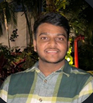

DAIVIK SM

Summary
I am a hardworking and dedicated individual currently pursuing my BE-CSE course.
Education
- Schooling : Christ Public School(2008-2020)
- Pre-University : BASE PU College(2020-2022)
- University : JSSSTU - BE in Computer Science and Engineering(2022 - )
Achievements
- Sports Captain-2018
- Assistant School Captain-2019
- School Captain-2020
- Passed Infosys Springboard to attend a 15 day couse in Infosys Mysuru
- Passed 10th with a percentage of 95%
- Passed PU with a percentage of 96%
- KCET ranking - 3687
- Current CGPA - 9.56
Skills
- Fluent in English,Hindi,Kannada
- Problem Solving skill
- Leadership skill
- JAVA
- C
- Web Development
Other
More about me
My Hobbies